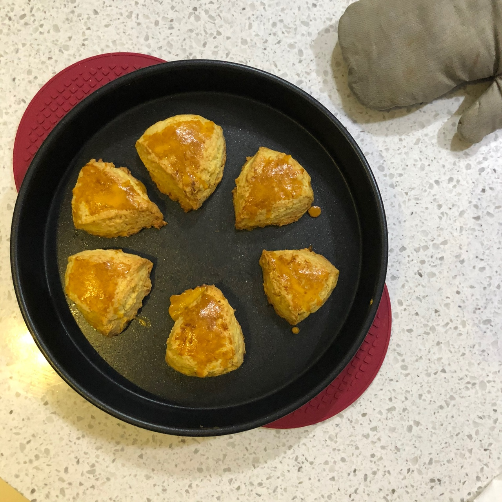

웹 사이트를 소개합니다.
하나,
코로나로 인해 바깥 활동을 자제해야 했던 이번 겨울방학, 저는 새로운 취미를 찾았습니다.
바로 홈베이킹인데요,
미숙한 실력이지만 유튜브 영상을 보며 이것저것 만들고 지인들에게 선물하기도 했습니다:)
Cookie, Cake, Etc로 목차를 구성했고, 각각을 클릭하면 베이킹 사진이 나오도록 만들었습니다.
둘,
누군가의 일상, 패션 등의 게시물을 보면서 자신의 취향과 맞는 것을 보면 사진 속의 장소가 어디인지, 어디서 산 제품인지 궁금해지기 마련입니다.
저는 제가 만든 빵 사진을 클릭하면 그 레시피와 레시피 영상을 볼 수 있도록 만들었습니다.